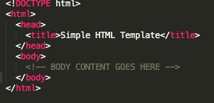

Setting Up Your Own Local Server
You now have your API key, but before we call to the BreweryDB API, we need to setup a local server. This is required due to various browser and server security features which will be touched on very litely.
Setting Up Your Own Local Server
Even with an API Key, the BreweryDB API will not allow a simple AJAX call due to a HTTP access controls and the requirement of an ACCESS-CONTROL-ALLOW-ORIGIN HTTP response header. For this reason, we will need to setup a local server on your computer in order to make the API call.
If you interested in learning more about the HTTP access controls and the CORS, you can visit the Mozilla Developer Networks documents regarding the subject by clicking here
I know, this sounds complicated, but with some guidance and code samples, you will be well on your way to accessing the API data.
Create a simple HTML file
You will need to create a simple HTML file, save it to a directory of your choose. You will need this in order to view the JSON parsed text returned by the API. Below is a example of a simple HTML template you can copy.
Installing Node.js and ExpressJS
Now it's time to install Node.js and ExpressJS. You will need this to make API calls. To learn how to install these tools you can refer to the installation pages of both sites. You must install Node.js first before installing ExpressJS.
For guidance on how to install these tools you can refer to the links on the right side of this page or you can access the installation documentation at the following links:
Once you have these installed and your package.json file is available, you will need to install the request package dependency which is an object of the Express middleware. For guidance on how to do this and what it does you can visit the NPMJS page by clicking here. This tool is necessary to do HTTP requests to the BreweryDB API
Server Code
Now that your setup, you need to select a directory where to save your server.js file. The directory will need to have the package.json copied to it and the node modules installed.
Once this is done, you can create a Javascript file, preferably titled server.js. In this file we will draft our code to access the BreweryDB API. The code will act as our middleware between us and the API servers. This is considered good practice so we can talk directly to the server, and in addition mask our API key which is imperative.
We begin by initializing our express and request objects. This is visisble in the first two lines of the code displayed below.
Furthermore, your going to want to set a variable to hold you API key, then call your express object to a designated variable, in my example i choose var app and you need to set your port by using the
app.set function.
API URL query requirements
Now, before we go any further I need to explain the URL requirements for querying the BreweryDB API. As stated in the API documentation (Found Here) the API expects the following URl syntax:
http://api.brewerydb.com/v2/ + {Insert EndPoint Argument} + ?key={YOUR API KEY} + &{Enter Desired Request Parameters, Ex: &srmId=10}
As explained in the API documentation, each endpoint as certain requirements. For example, if you elect to use the GET:/beers endpoint, you will need to including of the following request parameters, or as they call them attributes, in the URL:
- name
- abv
- ibu
- srmId
- availabilityId
- styleId
Below is an example of a URl call to the API:
http://api.brewerydb.com/v2/beers?key={YOUR KEY}&srmId=10
This will return all of the beers with a srmId assigned with the value of 10.
Finalizing Server Code
Now for the final piece of the server code, you will need to again initialize a app.get function to access the data. See the image below.
In the app.get code pictured above, when we enter http://localhost:8000/getBeers into our browsers URL bar, we will be making a GET call to the API's /Beers endpoint and use the following attributes &availableId=2&year=2012. This will return a list (or array as some may call it) of 50 beers whose available id equal 2 and year data equals 2012.
The remaining code is standard error handling code which can be copied if desired.
Output
We initialize the .js script by enter node server.js 8000 in our Windows Command Prompt or MacOSX Command Line and voila, we have output. It's not pretty, but we know see how we can use this data. Below is a sample output which you can expect.
Now we can discuss what we can do with this data ... on to the next page!